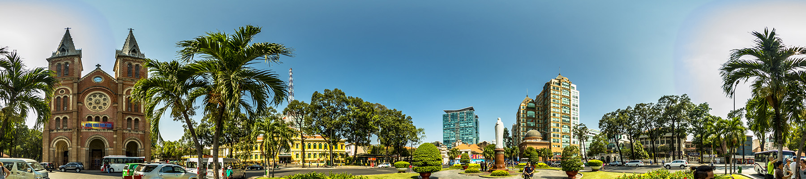
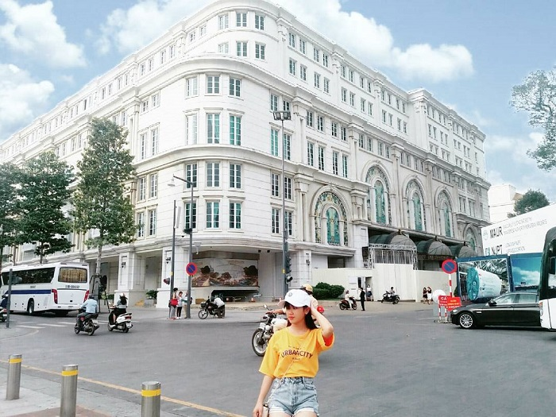
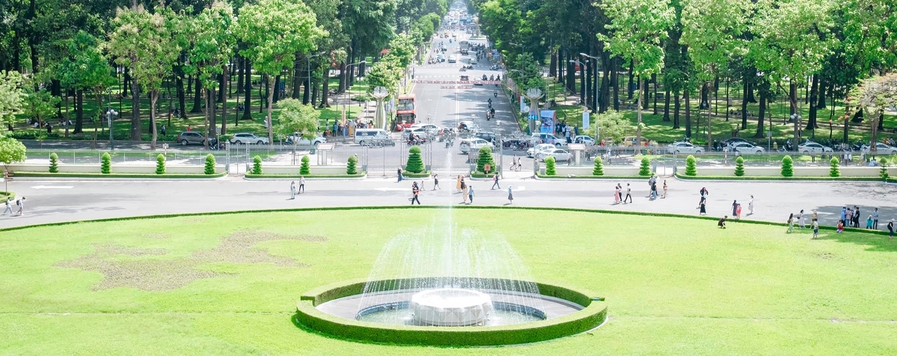
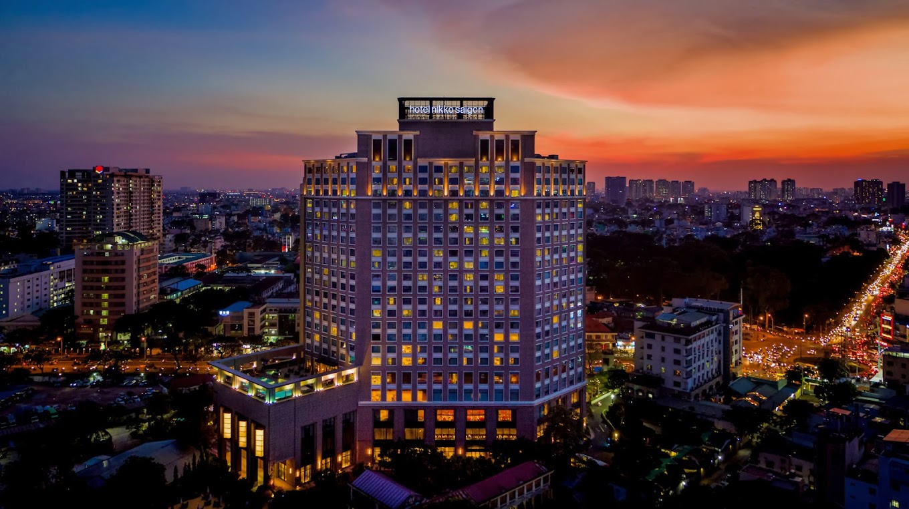
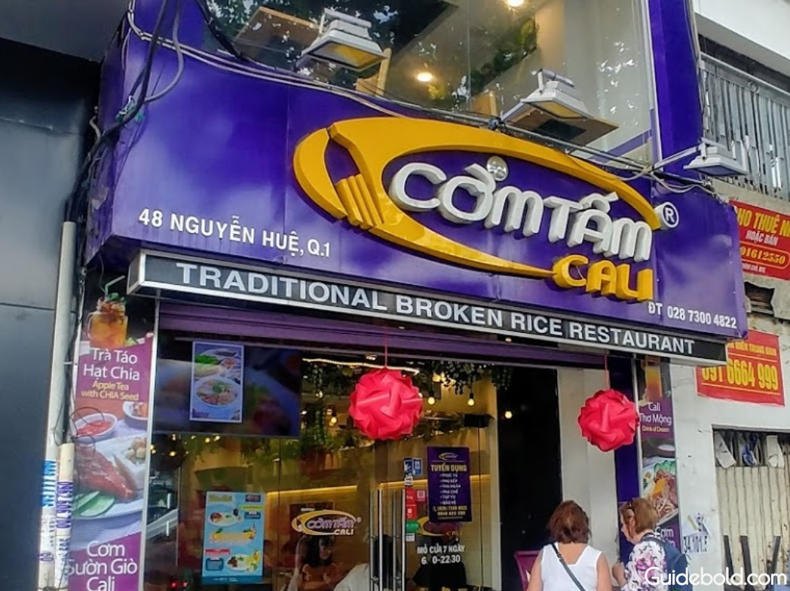
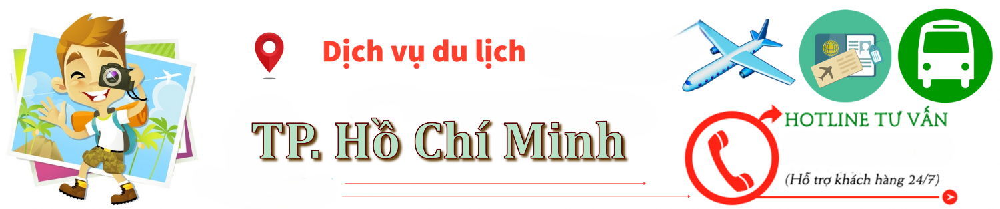

Du Lịch TP. Hồ Chí Minh
Hướng dẫn & Tư vấn cho cộng đồng người Việt tại Fairfax

Thời Điểm
Thích hợp quanh năm – khí hậu nhiệt đới, chia 2 mùa:
☀️ Mùa khô (tháng 12 – tháng 4): thời tiết đẹp, ít mưa, thích hợp tham quan ngoài trời.
🌧 Mùa mưa (tháng 5 – tháng 11): thường mưa vào chiều tối, nhưng vẫn có thể đi du lịch.

🌟 Điểm đến nổi bật ở TP. Hồ Chí Minh
🏛 Dinh Độc Lập Di tích lịch sử quan trọng, từng là Phủ Tổng thống VNCH
🗼 Nhà thờ Đức Bà & Bưu điện TP Biểu tượng kiến trúc Pháp cổ kính
🏙 Bitexco Skydeck Ngắm toàn cảnh TP từ tầng cao
🏛 Bảo tàng Chứng tích Chiến tranh Nơi tìm hiểu về chiến tranh Việt Nam
🏞 Công viên Tao Đàn, Thảo Cầm Viên Không gian xanh giữa lòng TP
🛍 Chợ Bến Thành Trung tâm mua sắm, ăn uống và quà lưu niệm
🛶 Bến Bạch Đằng – Du thuyền Sài Gòn River Trải nghiệm ăn tối trên sông về đêm
🌉 Phố đi bộ Nguyễn Huệ, chợ đêm Bùi Viện Nơi nhộn nhịp, đông vui về đêm

🛏️ Khách sạn & homestay
⭐ 5 sao Hotel Nikko, Caravelle, The Reverie, Lotte Legend
🏨 3-4 sao Liberty Central, Bay Hotel, Silverland Sakyo
🏠 Homestay – Boutique The Hammock Hotel, Maison De Camille, 1986 Home

🍜 Ẩm thực TP. Hồ Chí Minh
🍜 Phở – Bún bò Huế – Bún riêu Phở Lệ, Bún bò Út Hưng, Bún riêu Gánh
🍳 Cơm Tấm Ba Ghiền, Cơm Tấm Cali
🍲 Hủ tiếu Nam Vang Hủ tiếu Liến Húa, Hủ tiếu Nhân Quán
🥖 Bánh mì Sài Gòn Bánh mì Huỳnh Hoa, Bánh mì Như Lan
🍡 Các món ăn vặt – chè Chè Kỳ Đồng, Chè Hiển Khánh
🍤 Hải sản Ốc Đào, Quán Ốc Khánh

Dịch vụ hỗ trợ
Là nơi bạn có thể liên hệ để được hỗ trợ, tư vấn, phản ánh hoặc giải quyết các vấn đề liên quan đến hoạt động du lịch khi đến TP. Hồ Chí Minh.
☎️ Tổng đài du lịch TP.HCM 028 38 272 944
🚓 Công an Thành phố 113 hoặc 028 3838 7222
🚑 Cấp cứu – Bệnh viện Chợ Rẫy 028 3855 4137
🏥 Bệnh viện FV (quốc tế) 028 5411 3333
🏢 Sở Du lịch TP. HCM 028 3823 0602 – Email: sdl@tphcm.gov.vn/
💡 lưu ý:
🚕 Nên dùng các app đặt xe (Grab, Gojek, Be) thay vì bắt xe ngoài đường.
💳 Tránh mang quá nhiều tiền mặt; nên dùng ví điện tử, thẻ.
👝 Cẩn thận móc túi, giật đồ, nhất là nơi đông người.
🌧 Nếu đi mùa mưa, nên mang theo ô hoặc áo mưa mỏng.